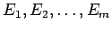
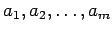
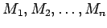
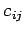
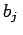
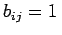

Inhalt Index DeskTop Bronstein

 Optimierung Lineare Optimierung Spezielle lineare Optimierungsprobleme
Optimierung Lineare Optimierung Spezielle lineare Optimierungsprobleme


Das Problem wird an Hand eines Beispiels dargelegt.
| Beispiel |
|
Die m Produkte  sind in den Mengen  herzustellen. Jedes Produkt kann auf jeder der n Maschinen  produziert werden. Zur Herstellung einer Produkteinheit des Produktes Ei benötigt die Maschine Mj die Bearbeitungszeit bij und verursacht dabei die Kosten . Die insgesamt für die Maschine Mj zur Verfügung stehende Maschinenzeit sei . Die auf jeder Maschine Mj von jedem Produkt Ei herzustellenden Mengen xij sollen so festgelegt werden, daß die verursachten Gesamtkosten möglichst gering sind. |
Das Verteilungsproblem ist eine Verallgemeinerung des Transportproblems und kann mit dem Simplexverfahren gelöst werden. Sind alle , dann kann nach Einführung eines fiktiven Produktes Em+1 der effektivere Transportalgorithmus zur Lösung herangezogen werden.